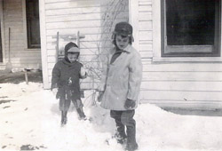
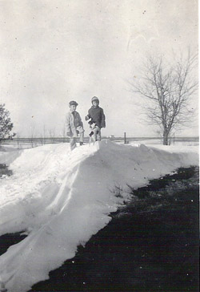
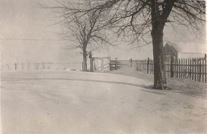

First grade (1946-47)
Strangely enough, my public school education began in the state of Oklahoma, Kansas's neighbor to the south. For a short time in the fall of 1946, probably less than two months, my parents, my brother Gary, and I lived with my grandmother Stone in Caney. Being very close to the border with Oklahoma, we could commute to a little town called Barnsdall, where they had found teaching positions. I started first grade here. I can still vaguely see my classroom and playground in my mind, but little else. Part of that can be chalked up to the fact that I was only 5 years old, not the normal 6.
However, soon my father found a better job in western Kansas, at a little town called Ransom. My mother also got a music teaching job at a town some 20 miles or so away. It was there, in Bazine, that I finished my first grade year. The daily commute was surely something of a sacrifice and struggle. Of course, I was younger than all my classmates, and as was so often true throughout my school years, the "new kid", too. So I was often the object of the teasing of the older 2nd grade boys. They would often taunt me by saying, "Hey, Trotter, did you trot to school today?" Remember now, they would be 2 years older than I. What could I say?
Another event deeply engraved in my mind concerns the day I took a baseball to school. For some reason, perhaps bad weather outside, we had recess in the gymnasium. I began throwing the ball against the walls and catching it as it bounced back. High up along these walls were some windows, so you probably know what happened then. Yep, I threw my ball too high once and broke a window. I was scared to pieces. That in itself was bad enough, but I was not ready at all for what several kids did and said to me next. They gathered around me, each pointing the index finger of one hand at me; then crossing it with the index finger of the other hand, they began sliding the second finger from knuckle to fingernail rhythmically many times. All the while they were chanting in a sing-song fashion these words, "Ah-fur, ah-fur!" I had never seen such behavior before, but I knew I wanted to find the nearest hole and crawl in.
At least my memories of life back in Ransom were not like that. My father was the high school basketball coach here. I loved the game too. So much so that during the half-time when he would take his players into the locker room for discussing how things were going, I would take my ball out on the court and "shoot hoops" all by myself. As there was no performance going on at that time, I became the entertainment, the "half-time show" as it were, for the audience. I didn't mind, I was in my own little world. Besides, my "daddy" was the coach, so to whom was anyone going to complain? I had it made.
Another fond memory that I carry from this period of my young life was that my parents gave me my first real wrist watch. And not just any old watch, no siree! It was a genuine, first-class Mickey Mouse watch! (The picture to the right shows what it looked like.) I wore it proudly for several years to come.
As anyone who has lived in western Kansas for any length of time can attest, winters can be ferociously cold and bitter. The winter of '46-'47 was no exception. add on to that the fact that the house we lived in lacked central heating as we know it today. i recall my parents describing our living conditions as rather spartan. Here are some rare photographs from that period.
   In front of the house Climbing Mt. Everest? Brrr. That's blizzard weather!
| Comments? Send e-mail. |
Back to top |
Go back to Contents |
online generic viagra online generic viagra cheap generic viagra cheap generic viagra usa order viagra usa order generic viagra usa generic viagra usa order generic viagra online viagra without perscription usa generic viagra usa order generic viagra usa online generic viagra order generic viagra online order viagra usa order generic viagra viagra non prescription viagra online non prescription order viagra usa order viagra canada viagra without perscription canada viagra non prescription viagra non prescription order viagra canada viagra online non prescription